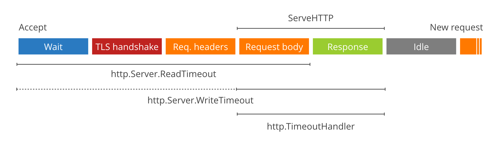

目录 [−]
英文原始出处: The complete guide to Go net/http timeouts, 作者: Filippo Valsorda
当用Go写HTTP的服务器和客户端的时候，超时处理总是最易犯错和最微妙的地方之一。错误可能来自很多地方，一个错误可能等待很长时间没有结果，直到网络故障或者进程挂起。
HTTP是一个复杂的、多阶段(multi-stage)协议，所以没有一个放之四海而皆准的超时解决方案，比如一个流服务、一个JSON API和一个Comet服务对超时的需求都不相同， 往往默认值不是你想要的。
本文我将拆解需要超时设置的各个阶段，看看用什么不同的方式去处理它， 包括服务器端和客户端。
SetDeadline
首先，你需要了解Go实现超时的网络原语(primitive): Deadline (最后期限)。
net.Conn为Deadline提供了多个方法Set[Read|Write]Deadline(time.Time)。Deadline是一个绝对时间值，当到达这个时间的时候，所有的 I/O 操作都会失败，返回超时(timeout)错误。
Deadline不是超时(timeout)。一旦设置它们永久生效(或者直到下一次调用SetDeadline), 不管此时连接是否被使用和怎么用。所以如果想使用SetDeadline建立超时机制，你不得不每次在Read/Write操作之前调用它。
你可能不想自己调用SetDeadline, 而是让net/http代替你调用，所以你可以调用更高级的timeout方法。但是请记住，所有的超时的实现都是基于Deadline, 所以它们不会每次接收或者发送重新设置这个值(so they do NOT reset every time data is sent or received)。
江南雨的指正：
应该是由于“Deadline是一个绝对时间值”，不是真的超时机制，所以作者特别提醒，这个值不会自动重置的，需要每次手动设置。
服务器端超时设置

对于暴露在网上的服务器来说，为客户端连接设置超时至关重要，否则巨慢的或者隐失的客户端可能导致文件句柄无法释放，最终导致服务器出现下面的错误:
http: Accept error: accept tcp [::]:80: accept4: too many open files; retrying in 5ms
http.Server有两个设置超时的方法: ReadTimeout 和 andWriteTimeout`。你可以显示地设置它们：
|
|
ReadTimeout的时间计算是从连接被接受(accept)到request body完全被读取(如果你不读取body，那么时间截止到读完header为止)。它的内部实现是在Accept立即调用SetReadDeadline方法(代码行)。
|
|
WriteTimeout的时间计算正常是从request header的读取结束开始，到 response write结束为止 (也就是 ServeHTTP 方法的声明周期), 它是通过在readRequest方法结束的时候调用SetWriteDeadline实现的(代码行)。
|
|
但是，当连接是HTTPS的时候，SetWriteDeadline会在Accept之后立即调用(代码)，所以它的时间计算也包括 TLS握手时的写的时间。 讨厌的是， 这就意味着(也只有这种情况) WriteTimeout设置的时间也包含读取Headerd到读取body第一个字节这段时间。
|
|
当你处理不可信的客户端和网络的时候，你应该同时设置读写超时，这样客户端就不会因为读慢或者写慢长久的持有这个连接了。
最后，还有一个http.TimeoutHandler方法。 它并不是Server参数，而是一个Handler包装函数，可以限制 ServeHTTP调用。它缓存response, 如果deadline超过了则发送 504 Gateway Timeout 错误。 注意这个功能在 1.6 中有问题，在1.6.2中改正了。
http.ListenAndServe 的错误
顺便提一句，net/http包下的封装的绕过http.Server的函数http.ListenAndServe, http.ListenAndServeTLS 和 http.Serve并不适合实现互联网的服务器。这些函数让超时设置默认不启用，并且你没有办法设置启用超时处理。所以如果你使用它们，你会很快发现连接泄漏，太多的文件句柄。我犯过这种错误至少五六次。
取而代之，你应该创建一个http.Server示例，设置ReadTimeout和WriteTimeout,像上面的例子中一样使用相应的方法。
关于流
令人心塞的是， 没有办法从ServeHTTP中访问底层的net.Conn，所以提供流服务强制不去设置WriteTimeout（这也可能是为什么这些值的默认值总为0）。如果无法访问net.Conn就不能在每次Write的时候调用SetWriteDeadline来实现一个正确的idle timeout。
而且，也没有办法取消一个阻塞的ResponseWriter.Write，因为ResponseWriter.Close没有文档指出它可以取消一个阻塞并发写。也没有办法使用Timer创建以俄国手工的timeout 杯具就是流服务器不能对于慢读的客户端进行防护。我提交的了一个［bug](https://github.com/golang/go/issues/16100)，欢迎大家反馈。
编者按: 作者此处的说法是有问题的，可以通过Hijack获取net.Conn,既然可以可以获取net.Conn,我们就可以调用它的SetWriteDeadline方法。代码例子如下：
|
|
客户端超时设置

Client端的超时设置说复杂也复杂，说简单也简单，看你怎么用了，最重要的就是不要有资源泄漏的情况或者程序被卡住。
最简单的方式就是使用http.Client的 Timeout字段。 它的时间计算包括从连接(Dial)到读完response body。
|
|
就像服务器端一样，http.GET使用Client的时候也没有超时设置,所以在互联网上使用也很危险。
有一些更细粒度的超时控制：
net.Dialer.Timeout限制建立TCP连接的时间http.Transport.TLSHandshakeTimeout限制 TLS握手的时间http.Transport.ResponseHeaderTimeout限制读取response header的时间http.Transport.ExpectContinueTimeout限制client在发送包含Expect: 100-continue的header到收到继续发送body的response之间的时间等待。注意在1.6中设置这个值会禁用HTTP/2(DefaultTransport自1.6.2起是个特例)
|
|
如我所讲，没有办法限制发送request的时间。读取response body (原文是读取request body，按照理解应该是读取response可以手工控制)的时间花费可以手工的通过一个time.Timer来实现, 读取发生在调用Client.Do之后（详见下一节）。
最后将一点，在Go 1.7中，增加了一个http.Transport.IdleConnTimeout， 它不控制client request的阻塞阶段，但是可以控制连接池中一个连接可以idle多长时间。
注意一个Client缺省的可以执行 redirect。http.Client.Timeout包含所有的redirect，而细粒度的超时控制参数只针对单次请求有效， 因为http.Transport是一个底层的类型，没有redirect的概念。
Cancel 和 Context
net/http提供了两种方式取消一个client的请求: Request.Cancel以及Go 1.7新加的Context。
Request.Cancel是一个可选的channel, 当设置这个值并且close它的时候，request就会终止，就好像超时了一样(实际它们的实现是一样的，在写本文的时候我还发现一个1.7 的 一个bug, 所有的cancel操作返回的错误还是timeout error )。
我们可以使用Request.Cancel和time.Timer来构建一个细粒度的超时控制，允许读取流数据的时候推迟deadline:
|
|
上面的例子中我们为Do方法执行阶段设置5秒的超时，但是我们至少花费8秒执行8次才能读完所欲的body，每一次设置2秒的超时。我们可以为流 API这样处理避免程序死在那里。 如果超过两秒我们没有从服务器读取到数据， io.CopyN会返回net/http: request canceled错误。
在1.7中， context包升级了，进入到标准库中。Context有很多值得学习的功能，但是对于本文介绍的内容来讲，你只需直到它可以用来替换和扔掉Request.Cancel。
用Context取消请求很简单，我们只需得到一个新的Context和它的cancel()函数，这是通过context.WithCancel方法得到的，然后创建一个request并使用Request.WithContext绑定它。当我们想取消这个请求是，我们调用cancel()取消这个Context:
|
|
Context好处还在于如果parent context被取消的时候(在context.WithCancel调用的时候传递进来的)，子context也会取消， 命令会进行传递。
好了，这就是本文要讲的全部，希望我没有超过你的阅读deadline。
作者的公司cloudflare在英国、美国和新加坡招人。云初创公司，挺知名。